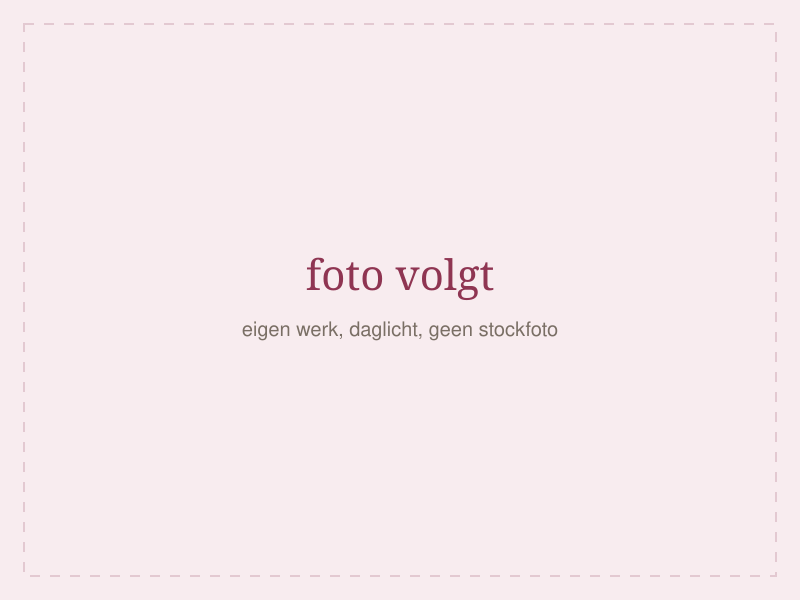

Naailes in [STAD]
Leren naaien in een groep van vijf.
Tien weken, 2,5 uur per les, vijf mensen achter de machine. Aan het eind van de beginnerscursus heb je een kledingstuk gemaakt dat je ook echt aantrekt.
- Groep
- Maximaal 5 mensen
- Een blok
- 10 weken × 2,5 uur
- Machine
- Aanwezig, je mag lenen
Drie manieren om te beginnen
Begin bij de beginnerscursus als je nog nooit achter een machine hebt gezeten. Zit je al verder, dan zijn er twee routes.
-
Beginnerscursus
€39510 weken × 2,5 uur
- Van nul naar een afgemaakt kledingstuk
- Machine, gereedschap en strijkijzer ter plaatse
- Geen ervaring nodig, echt niet
-
Gevorderde cursus
€42510 weken × 2,5 uur
- Je eigen project, stap voor stap
- Pasvorm, voering, lastige stoffen
- Instap: beginnerscursus of vergelijkbare ervaring
-
Vrije naailes
€28per les van 2,5 uur · strippenkaart 5 × €125
- Kom met je eigen stof en patroon
- Begeleiding op de plekken waar je vastloopt
- Losse les of strippenkaart
Eerstvolgende startdata
Twee blokken per ronde, één op de dinsdagavond en één op de donderdagavond. Vol is vol.
| Cursus | Start | Tijd | Plekken |
|---|---|---|---|
| Beginnerscursus | [STARTDATUM 1] | Dinsdag 19.00–21.30 | [PLEKKEN] |
| Beginnerscursus | [STARTDATUM 2] | Donderdag 19.00–21.30 | [PLEKKEN] |
Staat jouw datum er niet bij?
Laat je e-mailadres achter via het inschrijfformulier en je hoort als eerste wanneer de volgende ronde opengaat. Je zit nergens aan vast.
Wat je hier wel en niet krijgt
Wel
- Maximaal vijf mensen, dus je krijgt aandacht op het moment dat je vastloopt
- Je mag mijn machine lenen als je er nog geen hebt
- Koffie en thee staan klaar
- Stofadvies voordat je iets koopt dat je niet nodig hebt
Niet
- Een klas van twintig waarin je achteraan staat
- Een online videocursus met een forum
- Een diploma dat ergens geldig is — wel een kledingstuk dat je past
- Haast
Zo ziet het eruit
Eigen werk, eigen lokaal, daglicht. Geen stockfoto's.

Vijf plekken per blok
Meer machines zijn er niet, en meer aandacht past er niet bij. Schrijf je in, dan houd ik je plek zeven dagen vast.